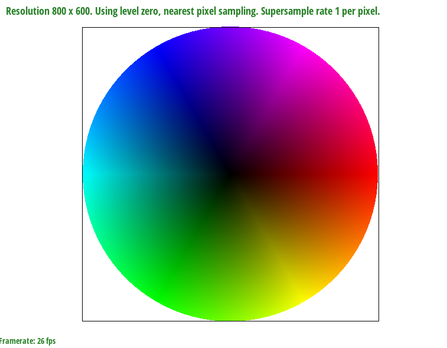
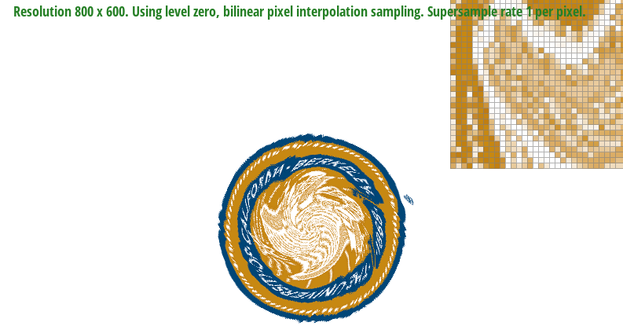

Overview
This rasterizer was written in C++ and utilizes core concepts of the rasterization pipeline to create rasterized triangles, antialised triangles, and has the feature of applying transformations. Additionally, we implemented both pixel and level sampling by using barycentric coordinates to transform pixel coordinates into texture coordinates as well as calculating the proper mipmap level to sample from. The end product is a rasterizer capable of producing images of varying sample rates and sampling methods to fit any screen scenario. We have definitely gotten a much better understanding of the rasterization pipeline and how your geometry and textures come together to form a rendered image on the screen.
Section I: Rasterization
Part 1: Rasterizing single-color triangles
Our method of rasterizing single-color triangles essentially involved a two step process. We iterate through the bounding box of the triangle, then for each point, we do a point-in-triangle test
to determine if the point should be colored. Our point-in-triangle test uses the line test described in lecture, where all 3 line tests must have the same sign for the point to be considered in the triangle.
We check if they all have the same sign rather than if they are just all greater than 0 to account for the winding direction of the vertices. If the point is two be colored, we set the appropriate index of
our frame buffer to the provided color.
Through the point-in-triangle test, we can see that our implementation is more efficient than binding the space to a box which would sample more points.

|
|
|
|
|
Part 2: Antialiasing triangles
In order to support supersampling for single-color triangles, we had to restructure a few things in our code. First, we updated our sample_buffer to be of size width * height * sample_rate
and ensured relevant functions supported this new sample_buffer size. Then, when doing our point-in-triangle tests, instead of just checking the value at the center of each pixel, we checked
at sample_rate values evenly spread across the pixel in a grid pattern, and added to our now expanded sample_buffer as in part 1. Finally, when resolving our sample_buffer to the frame buffer,
instead of just converting each sample point to the associated index in the frame buffer, we instead average the color samples in each pixel and then resolve the averaged color to the frame buffer.
In the above images, you will find that the the higher sample rate values are more effective in smoothing out thin shapes than smaller sample rates. This is because the antialiasing has more informationtion
when averaging the color of each pixel into the frame buffer.
Part 3: Transforms
To support the transforms required by this part, we simply needed to return the appropriate matrices. For the translate function, we return a matrix with ones on the diagonal, the change in x in the top right,
the change in y on the middle right, and the rest filled with 0s. For the scale function, we returned a matrix with the scale of x, scale of y, and 1 on the diagonal, and 0s everywhere else. For the rotate function,
we returned a matrix with the 2D rotation matrix in the top left corner, a 1 in the bottom right corner, and the rest filled with 0s.
For the image below, transformations were applied to most of the individual components of the original cubeman. Rotations and color changes were applied to both arms, resizing and translations were coupled with duplications to create the eyes, and the
final image was a recreation of Kirby waving to you!
|
|
Section II: Sampling
Part 4: Barycentric coordinates
The main structure of the barycentric triangle rasterizer was essentially identical to the supersamped single-color function, except with the additional step of setting each value to the weighted average of the
vertex colors. We accomplished this by using the barycentric interpretation from lecture, where you use the line function from the point-in-triangle test and divide it by the line function with the opposite vertex to get
that vertex's "weight". Once you have all of the weights, you can get the weighted average of the vertex colors and set the appropriate sample_buffer index;
Barycentric coordinates are a coordinate system that represent a point inside a triangle or its vertices through the use of 3 scalars.
Consider the color wheel below if it were to have a triangle around the primary colors, and each vertice would be one of the 3 primary colors.
With barycentric coordinates we could reference any color on the spectrum of those 3 intersecting colors through the weights of the scalars with alpha, beta, and gamma.
|

|
Part 5: "Pixel sampling" for texture mapping
Pixel sampling is the act of taking a pixel's color data to recreate it in any screen scenario. The greater the amount of pixels sampled, the more accurate and
nicer the final draw image results are. Two methods of sampling are nearest and bilinear sampling. The former involves sampling the closest pixel
and replacing every pixel with it for the final image. The latter interpolates colors in the sampled pixels such that there is a cleaner effect in the final image
by smoothing out jagginess through its gradient-like qualities.
The skeleton of rasterzing the textured triangle is more-or-less identical to the previous rasterization functions except with the added caveat that we need to convert our pixel space coordinate to a coordinate
in texture space. To simplify our logic for level sampling, we did this using barycentric coordinates. Essentially, we got the barycentric coordinates of our coordinate (x, y) in pixel space, then used those weights to
find our coordinate (u, v) in texture space by multiplying the given vertex mappings by their corresponding weights. Then, we set the appropriate values of our Sample Params struct and pass it to the tex.sample() function.
In the sample function, we have a switch case that matches the psm and lsm values to their appropriate function and returns the resulting texel. For nearest_pixel sampling, we just take the given p_uv, scale up by the width and
height of the proper mipmap level, and then round to the nearest texel. For bilinear sampling, perform the bilinear sampling algorithm described in lecture involving a series of lerps and multiplies to get the weighted average of
nearby texels.
There will be noticeable differences between both sampling methods when the image has finer detail as some of it can be lost in the process. For example, bilinear sampling
by virtue of its implementation can eliminate sharp elements in an image, while nearest sampling could slightly obscure some of the finer details. The images show that bilinear
is smoother and has a more 'blur-like' effect.
|
|
|
|

|
|
Part 6: "Level sampling" with mipmaps for texture mapping
Level sampling involves the use of mipmaps to change the level of detail necessary relative to the distance of the image. There is no reason to produce a high quality image that is far away and this philosphy drives our implementation.
Expanding on our solution for part 5, we calculate p_dx_uv and p_dy_uv by finding the barycentric coordinates of (x + 1, y) and (x, y + 1), finding their corresponding texture space values, and then subtracting the
texture coordinate p_uv from both of them. We pass them to the sample function, then to get the appropriate mipmap level, we take the log base 2 of the max norm between the two scaled derivatives. Then, depending on our
level sampling method, we return the appropriate level. In L_ZERO, we just return 0 no matter what. In L_NEAREST, we take our mipmap level, round to the nearest integer, then clamp to be within the range of our mipmap levels.
For L_LINEAR, we take the weighted average of samples from the mipmap level rounded up.
As the sample rate increases, so does the intensity of the calculations resulting in more memory usage and slower speed. Linear has the most aliasing power by virtue of its sampling design and similarly is the most process intensive.
The nearest is slightly more efficient but still produces jaggies. Despite that, its efficiency comes from not needing to average the colors as much to give the gradient-like effect.
|
|
|
|
|
|
Section III: Art Competition
If you are not participating in the optional art competition, don't worry about this section!